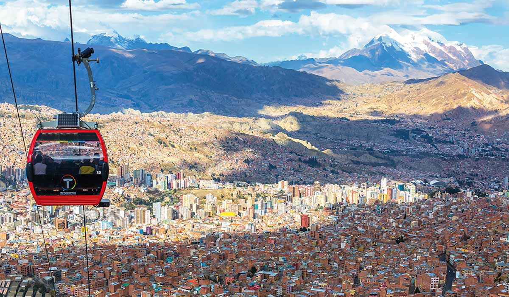

Loading date and time...
Which feature has a larger effect on the human population, latitude or elevation?
Consider bustling cities like New York, London, Tokyo, and Paris—all situated within 200 feet above sea level in the northern hemisphere. Elevation and latitude, key factors in civilization development, take the spotlight in untangling this geographical narrative. With a background in geography and history, my exploration aims to decipher whether elevation or latitude holds a more substantial sway over human population distribution. Beyond maps and statistics, this journey seeks to expose the dynamics that have shaped societies. Whether you're a geography enthusiast or just curious about the world, this investigation delves into the interplay between elevation, latitude, and the growth of civilizations. Scroll down to uncover the answers and discern if elevation or latitude emerges as the primary force shaping human habitation patterns.
As a globe-trotting journalist on a captivating mission, I am traversing the world to unravel a geographical mystery: Does elevation or latitude exert a more significant influence on human population distribution? My journey takes me from the dizzying heights of mountain cities to the vast, flat expanses of coastal metropolises, and into the heart of remote communities. Along the way, I am engaging with diverse cultures and environments, seeking insights from experts and locals alike. My quest is to piece together this complex puzzle, examining how these two fundamental aspects of geography shape the way we live, work, and build our communities. This exploration isn't just about numbers and statistics; it's a story of human adaptability and resilience in the face of nature's grand design.
Let's take a look at the largest city in the world, Tokyo.
 The Reporting from the bustling heart of Japan, I stand amidst the sprawling Tokyo metro area, home to a staggering 40.8 million souls. This figure, surpassing the entire population of countries like Australia and Canada, is almost unfathomable. As a traveling journalist exploring the interplay of geography and urban growth, Tokyo's story is particularly intriguing. Nestled at a modest elevation of just 137 feet above sea level, with vast stretches of the city hugging the coastline, Tokyo's geographical positioning is a key factor in its growth to become the world's most populous city. The city's latitude, at approximately 35 degrees north, places it squarely in the temperate zone. This geographic sweet spot blesses Tokyo with a climate that's rarely too harsh; temperatures seldom dip below freezing or soar above 100F (38C). The city is also favored with ample rainfall, yet it's spared from heavy snowfall. It's this combination of mild temperatures and abundant precipitation, alongside its low elevation, that makes Tokyo's climate exceptionally conducive for sustaining a large population. Here, where the city's heartbeat syncs with the rhythms of the sea and the temperate winds, one can truly witness the profound impact of latitude and elevation on human settlement and urban proliferation.
The Reporting from the bustling heart of Japan, I stand amidst the sprawling Tokyo metro area, home to a staggering 40.8 million souls. This figure, surpassing the entire population of countries like Australia and Canada, is almost unfathomable. As a traveling journalist exploring the interplay of geography and urban growth, Tokyo's story is particularly intriguing. Nestled at a modest elevation of just 137 feet above sea level, with vast stretches of the city hugging the coastline, Tokyo's geographical positioning is a key factor in its growth to become the world's most populous city. The city's latitude, at approximately 35 degrees north, places it squarely in the temperate zone. This geographic sweet spot blesses Tokyo with a climate that's rarely too harsh; temperatures seldom dip below freezing or soar above 100F (38C). The city is also favored with ample rainfall, yet it's spared from heavy snowfall. It's this combination of mild temperatures and abundant precipitation, alongside its low elevation, that makes Tokyo's climate exceptionally conducive for sustaining a large population. Here, where the city's heartbeat syncs with the rhythms of the sea and the temperate winds, one can truly witness the profound impact of latitude and elevation on human settlement and urban proliferation.
Next, we will transition to a city of extreme latitude. This will illustrate the enormous effect that latitude has on ctiy-building.
As a traveling journalist, I've encountered the profound impacts of latitude and elevation on human settlements, exemplified strikingly in Yakutsk, Siberia. Perched at a daunting 62 degrees north, Yakutsk is a testament to human resilience in one of the coldest large cities on Earth. Here, the extreme latitude shapes every facet of life, with winter temperatures often diving below -40°C, turning it into a landscape more reminiscent of another planet than our own. The deep freeze extends not just across the city's landscapes but into the very rhythm of life, influencing everything from infrastructure to daily routines. Buildings stand on specialized foundations to combat permafrost, while the local economy and social life revolve around adapting to these prolonged, frigid months. Yakutsk's isolation, compounded by its challenging geography, makes transportation and logistics a Herculean task, driving up living costs and limiting accessibility. Yet, amidst these stark conditions, there's a resilient community spirit, a vivid illustration of human adaptability. My journey here illuminates the stark reality of how geography - specifically latitude - can sculpt human existence, setting the stage for a unique interplay between environment and culture.
Lastly, we are going to analyze the city of La Paz in Bolivia. This will showcase the staggering effects of elevation on a large population center.

In the culmination of my global odyssey to discern the impact of geography on urban life, I find myself in La Paz, Bolivia, a city that literally takes one's breath away with its staggering elevation. Perched at around 3,640 meters (11,942 feet) above sea level, La Paz stands as one of the highest capitals in the world, presenting a stark contrast to the coastal and temperate cities I've traversed. Here, the elevation molds every aspect of existence, from the physiological to the cultural. The thin air challenges newcomers with altitude sickness, a stark reminder of nature's omnipresence. Yet, the city thrives, nestled in a dramatic canyon with the majestic Illimani mountain as its backdrop. La Paz's elevation influences its architecture, cuisine, and even transportation, with aerial cable cars crisscrossing the sky, offering a solution to the steep terrain. The city's markets brim with colorful Andean produce adapted to high-altitude growth, underscoring how local agriculture has ingeniously adapted to the heights. The resilience of La Paz and its inhabitants encapsulates the essence of my journey, showcasing how elevation profoundly shapes the human spirit and community life, forging cities that defy not just gravity, but expectations.
Alright, I am finally home from my "vacation", and I have compiled some data for us to analyze. Here is a bar graph that depicts the cumulative population of the top 100 cities in each elevation range in 100 million.
Look at the first bar. Notice how it dwarfs every other bar? It is saying that there are over 800 million people living in the top 100 cities below 500 feet elevation. This graph is a great visualizion of the exponential effect that elevation has on population. Elevation plays a crucial role in population distribution by affecting various aspects of life, including climate, agriculture, and trade accessibility. Higher elevations often bring colder temperatures and reduced oxygen levels, making living conditions more challenging. This can limit agricultural productivity and impact the overall livability of the region. Additionally, elevated areas are often farther from oceans and rivers, which are vital for trade and transportation. Increased distance from these waterways can make trade more difficult, leading to isolation and reduced economic opportunities for the population. Despite these challenges, some cities at higher elevations adapt and thrive through innovative solutions, showcasing the complex interplay between elevation and human settlement patterns.
Now, it's time to visualize latitude. This graph, just like the last one, will show the population of the top 100 cities in different latitudinal sectors in hundres of millions.
When looking at this graph, two things stand out, the bars of 10-30, and 30-50. This latitude range is sort of a goldilocks zone for humans. It encompasses the northern sections of the tropical zone and a large portion of the temperate zone. Both of these zones are arguably the best areas for human habitation. For example, the temperate zone generally has warm summers and cool to cold winters. This allows crops to grow but doesn't allow tropical diseases to fester. The tropical zone has warm temperatures years round which allows from plentiful agriculture but potent tropical diseases and animals are a problem.
This scatter plot shows the elevation and latitude of the 100 most populous cities.
When analyzing the graph, there is a large concecntration of cities around between 10-50 degrees north and all at low elevation. This compliments the data shown by the previous graphs. The average elevation of the 100 most populous cities is 782 feet. This is value is already fairly low, but is scewed by a few high elevation outliers. Therefore, most cities are low elevation. The average latitude of the 100 most populous cities is 24.5 degrees north. This is pretty much in the middle of the goldilocks zone that was identified earlier.
Having completed my extensive journey around the world, a quest driven by the pursuit of understanding the fundamental forces that shape human habitation, I can unequivocally conclude that elevation exerts a more profound influence on population distribution than latitude. While both elevation and latitude play pivotal roles in shaping the dynamics of human societies, elevation stands out as the primary determinant. One of the key factors contributing to this conclusion is the impact of elevation on trade and accessibility. High elevations often result in increased distance from oceans and rivers, making transportation more challenging and expensive. This impediment to trade and connectivity can limit economic opportunities and deter population growth. Moreover, elevated regions frequently experience harsher climates, which can pose additional challenges to sustaining large populations. In contrast, latitude, while influential, tends to have a more gradual effect on climate and can be mitigated through adaptation. As I reflect on my journey, it becomes evident that elevation's multifaceted influence on geography, climate, and infrastructure significantly shapes the distribution and growth of civilizations, making it the paramount factor in the intricate relationship between elevation and population.
Wow, that was an incredible and informational journey around the world and through my data. Now that my question has been answered, I am left with a question for you guys. How might the interplay between elevation and latitude continue to shape the future of human civilization in an era marked by environmental challenges and technological advancements?